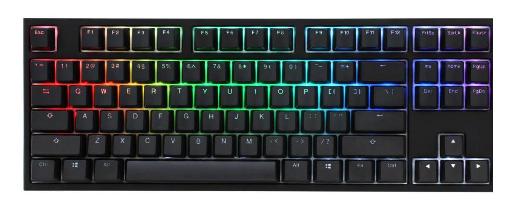
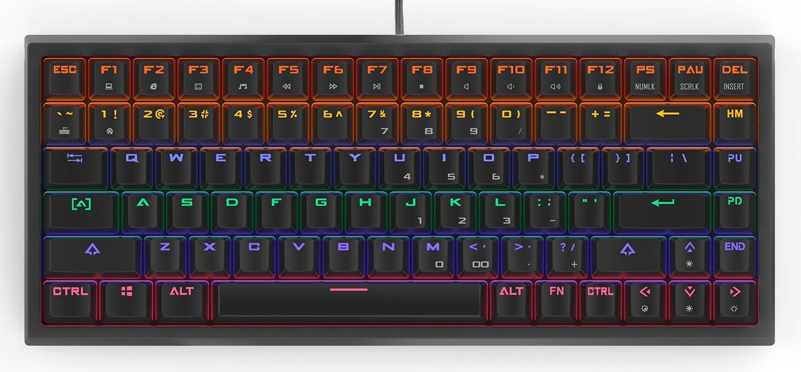
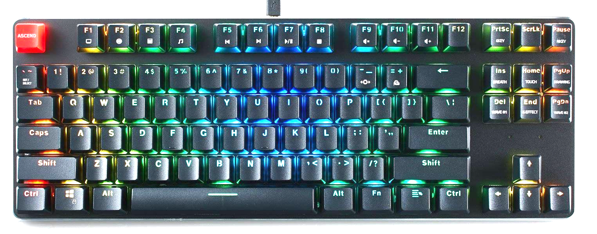
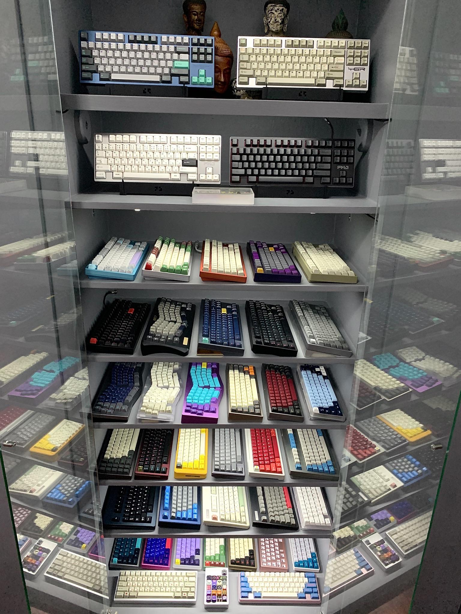
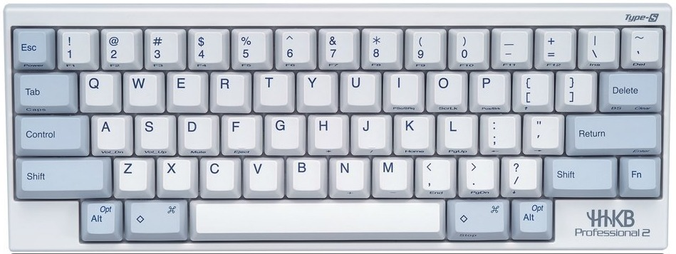

GUIDE
GUIDE
When it comes to creating a custom keyboard, there are a lot of factors to consider. Furthermore, there can be hundreds of different options to choose from and there are endless combinations. Unfortunately, figuring out what you like takes experimentation, which can cost a lot of money.
This guide is aimed at providing you with concise and essential information, so that you can delve down the rabbit hole and reach the "keyboard endgame", all whilst keeping costs as low as possible.
STARTING YOUR HOBBY
Before you build your first keyboard, there are several things that you need to know about. These are the pieces that make up a keyboard. Here is a list of the most important ones:
- The Board - By this, we mean the chassis that holds the rest of the keyboard. Boards come in different sizes, materials and supporting different layouts. The board, while often overlooked, has a large effect on the typing sentation of a keyboard. More about boards is written here.
- Switches - The mechanism underneath every key that provides resistance and actuates under pressure, sending an input through the keyboard, is called the switch. Switches have the largest impact on the feel of a keybaord, so choosing the right type is very important. This page has an in-depth guide on switches.
- Modifications - While there are various modifications, there are some that almost every enthusiast will consider when building a keyboard. Things like keycap sets, o-rings and switch lubrication can really enhance the aesthetics and typing senstation of your keyboard. More on mods and customisations here.
Picking a board
With knowledge of these fundamentals, you can begin to decide what you want. First comes deciding what sort of layout you want to use. It's generally recommended to get the standard layout in the country you live in, as that's most likely what you'll be used to. Alternatively, you can get any popular layout such as ISO or ANSI.
Second comes the size of the board. The most common size is the 100%, but due to the fact that most people don't really use the ten-key pad (to the far left of the keyboard), it's not recommended. It's much better so save a little desk space and go for a TKL, 75% or even 60%. Smaller keyboards are also more comfortable to type on.
Picking a switch
Now comes the hardest, but most rewarding part of the build. Choosing the switch. The more time you invest researching different switches, the more likely it is that you'll find something that suits your taste.
Unfortunately, though, until you actually use a type of switch, you won't actually know how it feels. This is where experimentation comes into play. Do not worry though. All switches are considered an upgrade over the standard rubber dome, so you can't go wrong here.
The most widely used switches amongst enthusiasts are the mechanical switches. They're highly customisable, widely supported by keyboard mods and feel great to type on. Cherry MX blues, browns and reds are recommended. For a first build, they won't disappoint.
Modifying your keyboard
After you've put in the time to figure out what keyboard fits your taste, you can start to modify it. It is highly recommended to get a set of keycaps. These really add to the aesthetic element of the keyboard. You have to make sure that the keycaps fit the switches on your keyboard though.
Another easy to add customisation are o-rings. These reduce the travel distance and soften the bottoming out of the keys, which have a big impact on typing sensation.
The third mod described is switch lubrication. Be careful, as this is not reversible. Make sure you have something to experiment on before lubing your keyboard. Lubrication has a noticeable effect on typing sensation and can be used to silence clicky keys.
RECOMMENDATIONS
For those who want something to start with, we have made a list of recommendations. This list covers a wide range of hobbyists, from beginners who want to start off their hobby to experienced enthusiasts looking to take things to the extreme.
Entry Level - quality
The entry level recommendation is the Ducky One TKL with Cherry MX Brown switches. While relatively expensive, everything in this keyboard is of high quality. The board is solid, the keycaps are made from double shot PBT (high quality) plastic and the Cherry switches are great as well.
This keyboard comes in standard layouts, which leaves room for modification if you ever decide to replace keycaps. It also has RGB lighting, wich adds an element of customisation. The TKL version was chosen as it's believed to be the perfect balance between functionality and comfort of use.
Entry Level - minimising costs
If you're not keen on spending a large amount of money on something that you might not even enjoy, then you should take a look at the DREVO Gramr 75% with Outemu Brown switches. This is a very cheap option, that will perform better than membrane counterparts.
The 75% profile is small and offers a good level of functionality. The Outemu switches aren't the absolute best, but they're still a massive upgrade over rubber domes. This keyboard is also in standard formats, so you can replace keycaps in the future. Finally, it has RGB lighting for that extra customisability.
The Experimentalist
If you want to dive deep into the world of keyboards to figure out what your preferences are, then you might want to try keeping costs low. After all, this can be an expensive hobby.
A partial solution to this is getting a hot-swappable PCB keyboard. This allows you to replace switches without having to do any soldering/de-soldering each time. All you have to do is pull the previous one out and put the new one in.
This means that instead of buying a new keyboard each time you want to try a new switch, you can simply buy the switches themselves. Everything goes into one board. You can even mix switches, so you can have every key up to your preference.
An example of a hot-swappable PCB keyboard is the Glorious GMMK. This keyboard comes in standard formats and TKL size. It has RGB and decent quality keycaps. A great buy for future experimentation.
The Collector
For those of you who want to have a display shelf full of keyboards such as the one in this image, several keyboards have been picked out for you. These keyboards have a large variety of switches, layouts, sizes and more.
The IBM model keyboards are a great buy if you want a pretty unique feel. First of all, these keyboards were made to last. They're made from solid materials. Second, they have some pretty unique switch types (Alps and Buckling spring switches). This will make a great addition to your collection.
The HHKB Pro 2 is a 60% Topre switch keyboard with a retro look to it. The layout of this keyboard is unique, in that it is similar in style to some old Apple keyboards.
Alternatively, there's the Leopold FC660C, which is a "65%" Topre switch keyboard. While it may not look as aesthetically appealing, it's thought to be of higher quality than the HHKB (which isn't low quality, by any means).

As for mechanical keyboards, the Vortex Race 3 has been selected. This is a very high quality 75% keyboard. It comes with relatively low profile keycaps and some replacement caps in different colours. The base plate is made of metal, which refines the typing sensation. A beautiful and practical keyboard.
The Keyboard Warrior
A master understands that perfection is never achieved. Nevertheless, they will endlessly search for the ability to take yet another step towards it. A true master of the arts knows each and every aspect of a keyboard and tries to make it as perfect as possible.
This category is dedicated to those who want everything custom. It gives a brief rundown of the creation process behind creating a keyboard from scratch. All the way from things as simple as keycaps to things as complex as wiring and programming the PCB.
Before you decide that you want a fully csutom keyboard, make sure that you know what you're getting yourself into. Creating a PCB and a board takes skill in craftsmanship. It also requires knowledge of electric circuits and understanding of matrices in maths. You also need to be able to program the keyboard to match your custom layout.
Although it gives full control over layout, it is recommended that you skip The PCB creation and programming, by buying a ready made pcb instead. You may want to get one that's hot-swappable to avoid soldering. Also, you must know what switch type you want the board to support.
As for the board, you can order a custom one, but it's much more satisfying to make one yourself. Just make sure that there is space for the pcb and wires/cables. You'll also want to screw things tightly to prevent annoying sounds when typing. You may want to leave some extra space for a shock damping pad under the pcb. This makes the keyboard more silent.
When you've completed the board, you can select the switches and keycaps you want. At this point, you should consider lubing not only the switches, but also the stabilizers for the longer keys on the keyboard. These make a lot of unwanted noise.
Finally, consider some other mods such as braided cables and artisan keycaps. Here's a video of the build process of a custom keyboard.